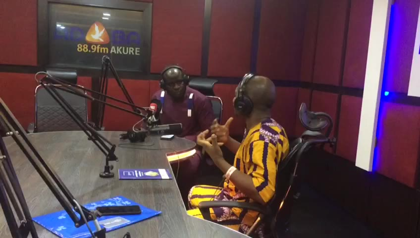

Profile
The voice behind Ondo State's government, now advising leaders on what to say and when to say it.
Richard Olatunde served as Chief Press Secretary to the late Governor Oluwarotimi Akeredolu, SAN, from 2021 to 2023, after three years as Special Assistant on New Media. He spoke for the government through a terror attack, a contested medical leave and a transition of power. Today he is Lead Strategist at Veritas-Eagles Communications and Services Ltd.
- 15+years in media and PR
- 6years in the Governor's Office
- 0statements archived here

Press Statements
Issued as Chief Press Secretary to the Governor of Ondo State, as carried by the national press.
In the News
Coverage, interviews and commentary.
On Air
Radio appearances and broadcast presentations.
About
Richard Olatunde began in broadcast journalism at UNIQ 103.1 FM and The Builder Magazine, where he learned that a message only matters if the audience hears it. That lesson carried him into government, first as Special Assistant to the Governor on New Media from 2018, then as Chief Press Secretary from March 2021 to December 2023.
In that role he managed the government's voice through the Owo church attack, the debate over Amotekun and state policing, and the long months of the governor's illness. He resigned after Governor Akeredolu's death and founded his practice at Veritas-Eagles Communications, where he now advises institutions, campaigns and public figures.
Credentials
- M.Sc. Mass Communication, Elizade University
- PGD and HND Mass Communication
- Member, Nigerian Institute of Public Relations (NIPR)
- Member, Nigeria Union of Journalists (NUJ)
Career
- Now Lead Strategist, Veritas-Eagles Communications
- 2021 to 2023 Chief Press Secretary to the Governor of Ondo State
- 2018 to 2021 Special Assistant to the Governor, New Media
- Earlier Broadcast journalist, UNIQ 103.1 FM; The Builder Magazine
Get in touch
For media enquiries, strategic communications or speaking engagements.